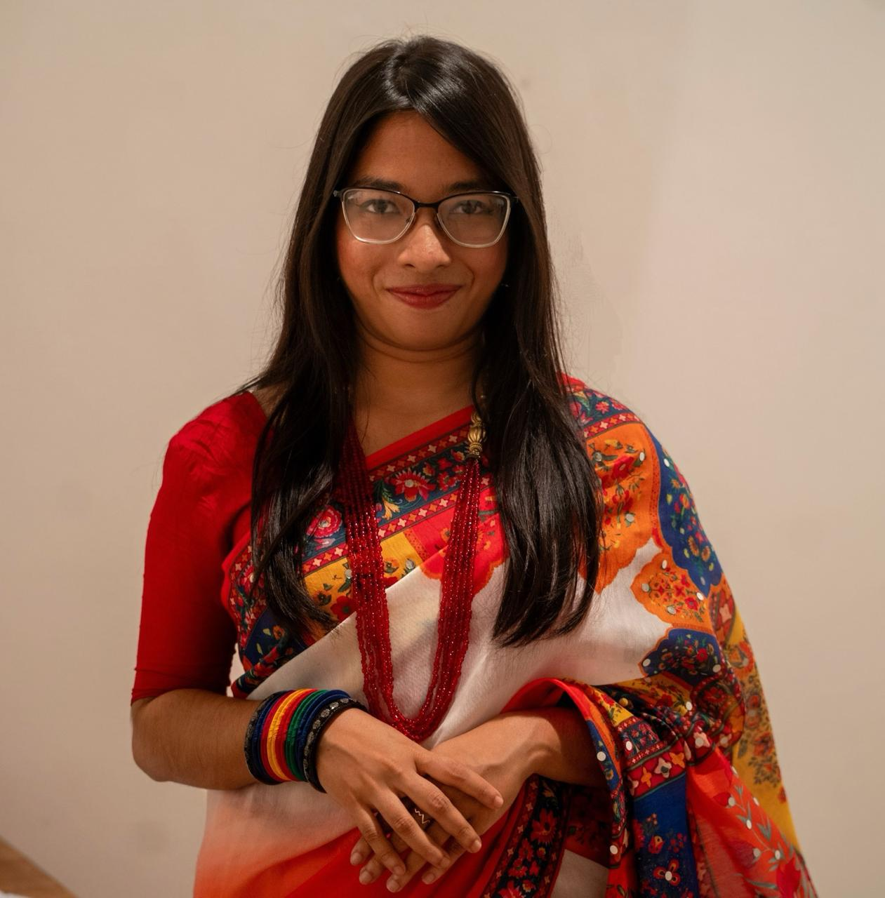
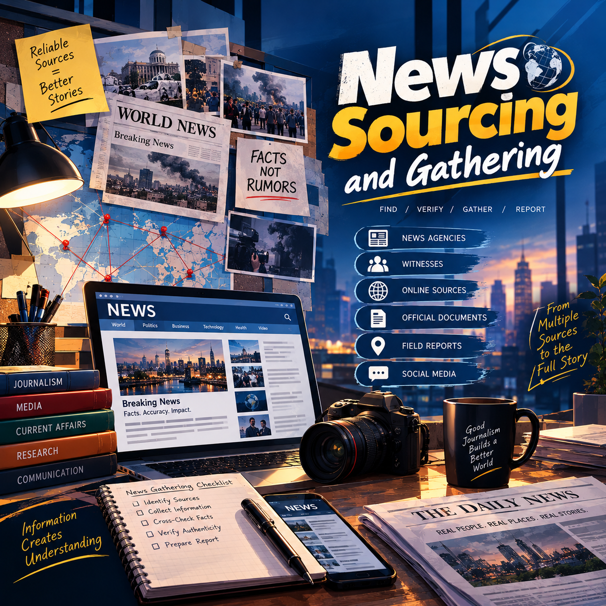
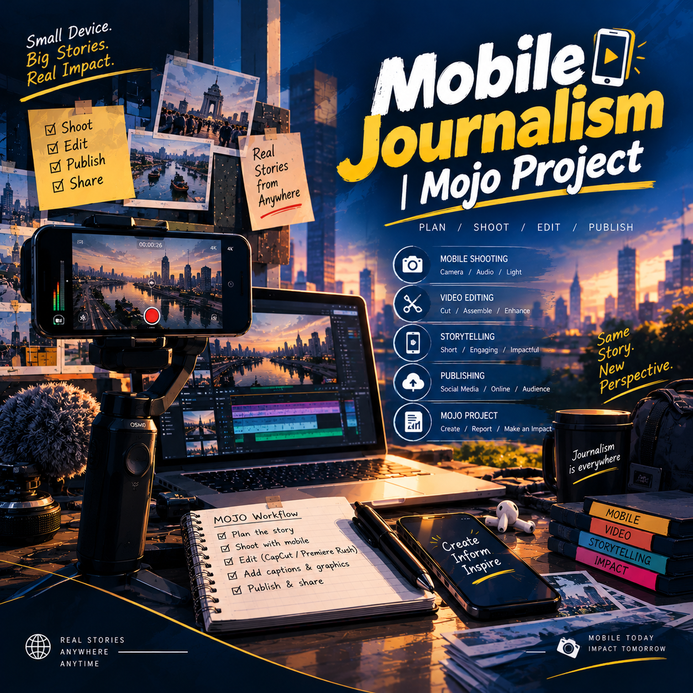
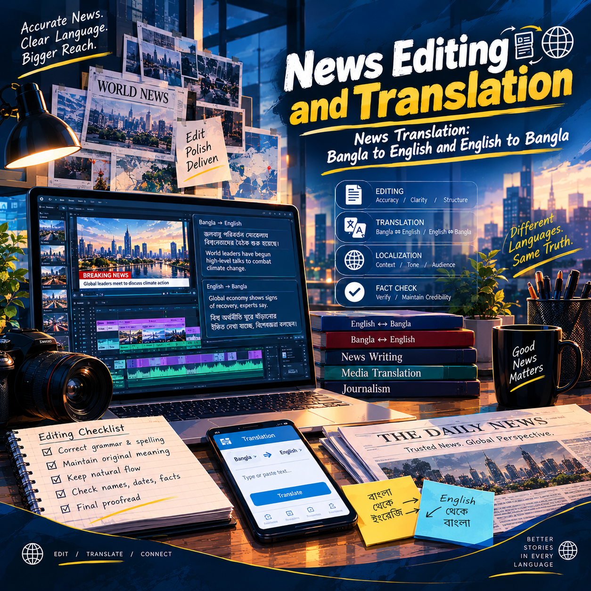
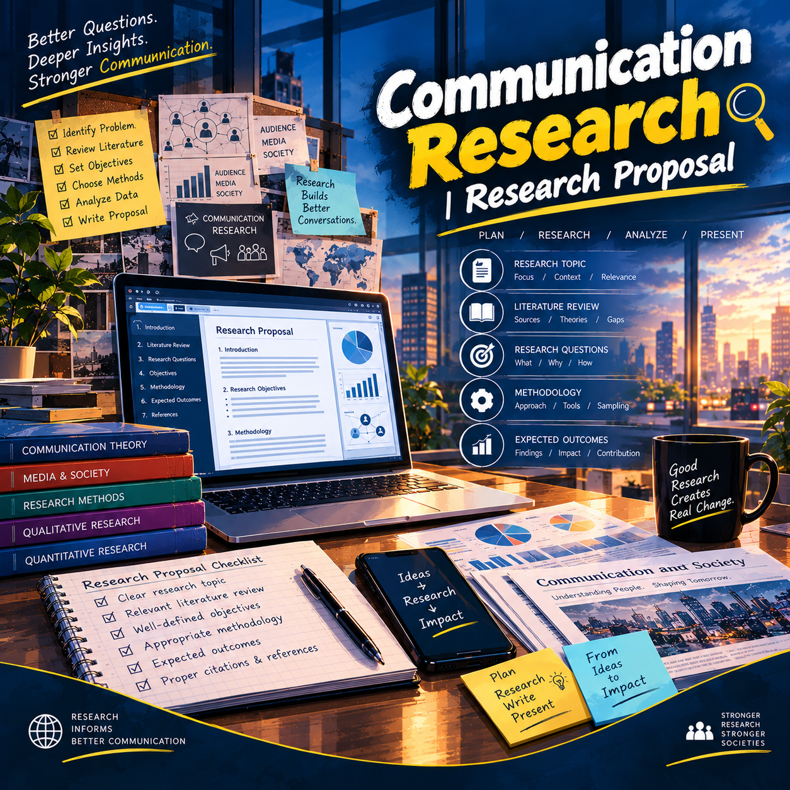
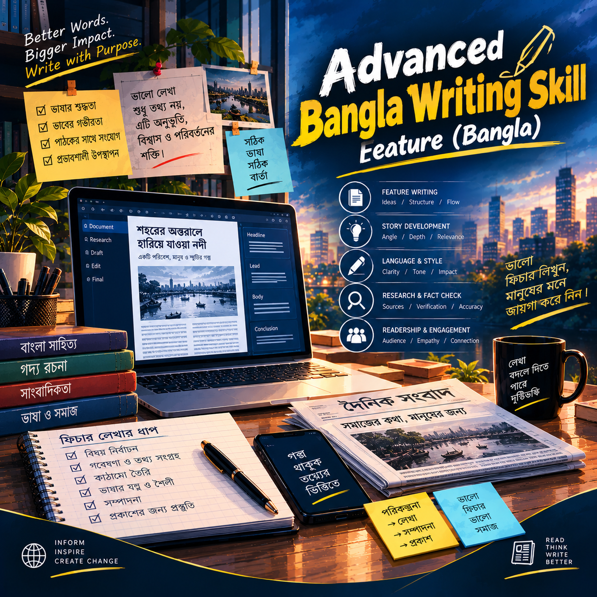
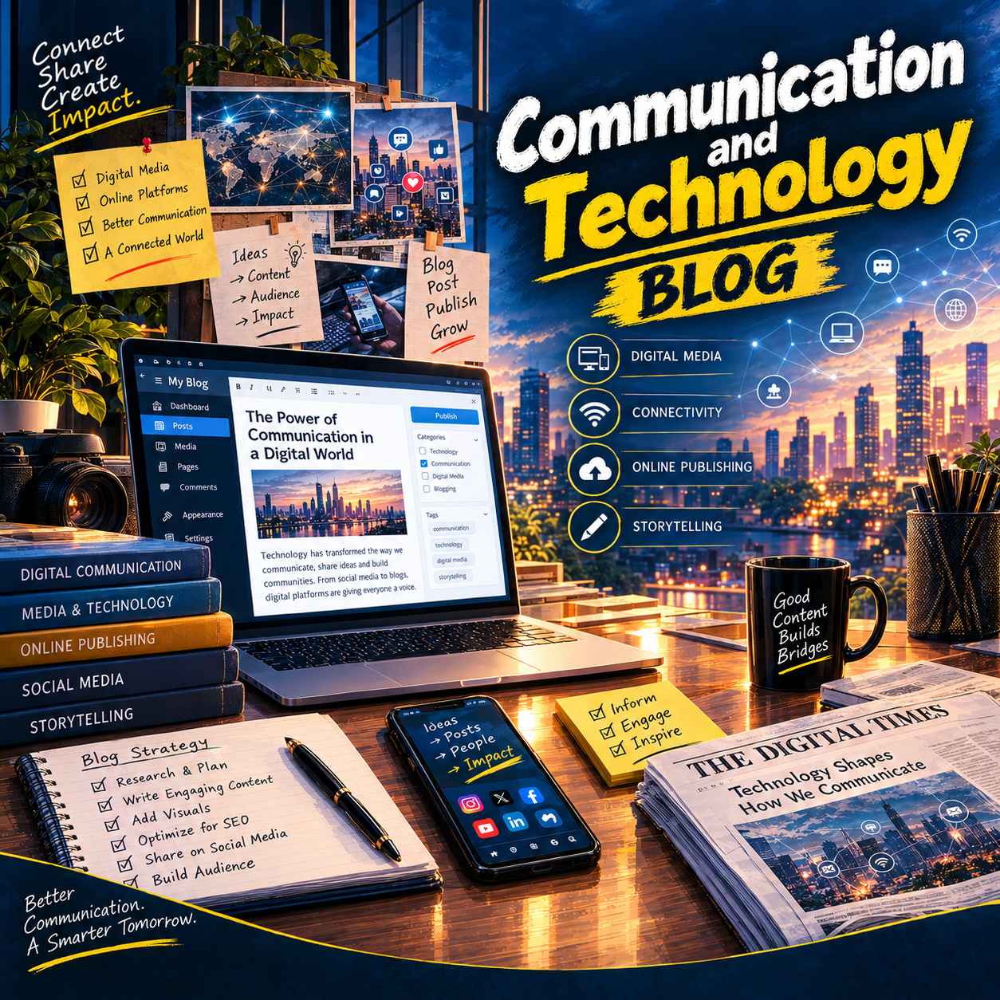
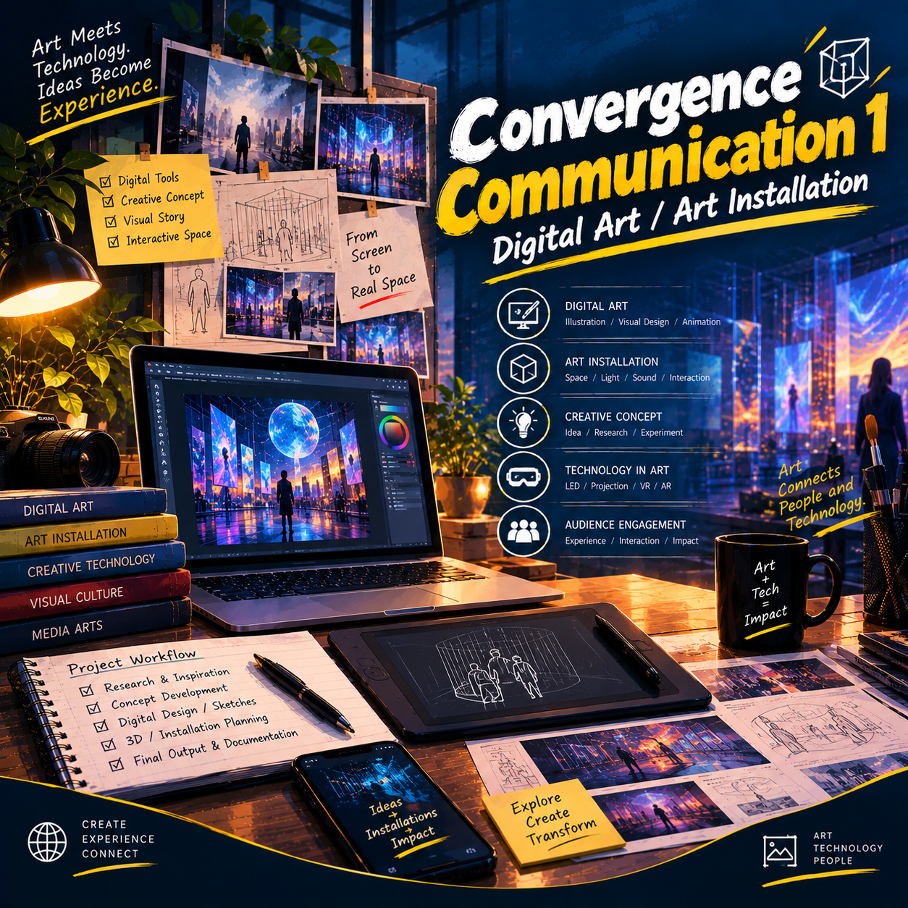

The ULABian Newspaper, Summer 2025 Term.JPG)
01 / RECOGNITION
CREATIVE & GRAPHICS
The Best Contributor
The ULABian Newspaper
Recognised for contribution to creative and graphics work during the Summer 2025 term.
SUMMER 2025MEDIA · JOURNALISM · STORYTELLING
Exploring people, perspectives and
the power of media.
CURIOUS MIND. CREATIVE PERSPECTIVE. MEANINGFUL STORIES.

FARIA AHMED OISHI
01 / A LITTLE ABOUT ME
DIGITAL JOURNALISM · ULAB
I am Faria Ahmed Oishi, a Media Studies and Journalism student at the University of Liberal Arts Bangladesh, majoring in Digital Journalism with a minor in Business Administration.
I am passionate about storytelling, media, creative communication and meaningful conversations. Through academic work and extracurricular experiences, I strive to create content that informs, inspires and connects people.
04 / EXPERIENCE & RECOGNITION
Recognising creativity, contribution, artistic expression and teamwork through university activities.
The ULABian Newspaper
Recognised for contribution to creative and graphics work during the Summer 2025 term.
SUMMER 2025
ULAB Student Affairs Office
Secured second place in the Art Competition organised by the ULAB Student Affairs Office.
2025
ULAB Language Club
Achieved third place in the Art Competition organised by the ULAB Language Club.
2025
UIGC
Runner-up in the UIGC Intra Futsal Cup, recognising teamwork, coordination and competitive spirit.
202302 / SELECTED ACADEMIC WORK
Academic projects exploring journalism, research, communication and creative media.
DIGITAL JOURNALISM

A reporting project exploring a topic beyond surface-level information.
VIEW PROJECT ↗A multimedia storytelling project combining journalism with visual and digital formats.
VIEW PROJECT ↗
A mobile-first reporting project using mobile journalism techniques.
VIEW PROJECT ↗
A journalism assignment focused on translating news content clearly and accurately.
VIEW PROJECT ↗WRITING · COMMUNICATION · CREATIVE MEDIA

A research-based project developing a focused question and proposal structure.
VIEW PROJECT ↗
A feature-writing assignment using narrative and descriptive Bangla writing.
VIEW PROJECT ↗
A blog-style project exploring communication technology and contemporary media.
VIEW PROJECT ↗
A creative media project exploring visual expression through digital art.
VIEW PROJECT ↗03 / EXPERIENCES & COLLABORATION
Stories, productions and experiences from university media, student publications and professional learning.
ULAB 8th Convocation
Interview with Dr. David A. Peterson
Kosovo Builds Bridges with Bangladesh
Journalists' Safety & Justice
National Tree Fair 2024
Freshers' Orientation — Spring 2024
New Faculty Orientation — Spring 2026
Induction Training at ULAB CETL
Abir Bin Yousuf — Teaching & Learning for GenZ
Md. Sharafat Chowdhury — Teaching & Learning for GenZ
Rukhsana Choudhury — Teaching & Learning for GenZ
Sabrina Lutfa — Teaching & Learning for GenZ
04 / LET'S CONNECT
For journalism, media, creative projects and collaboration, feel free to get in touch.